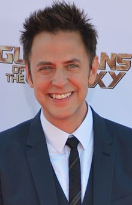

is an American filmmaker, actor, novelist, and musician.
He started his career as a screenwriter in the mid-1990s, writing the scripts for Tromeo and Juliet (1996), The Specials (2000),
Scooby-Doo (2002) and its sequel, Scooby-Doo 2: Monsters Unleashed (2004), and the 2004 version of Dawn of the Dead.
He then started working as a director, starting with the horror-comedy film Slither (2006).
He subsequently wrote and directed the web series James Gunn's PG Porn (2008–2009), the superhero film Super (2010), and the Marvel Cinematic Universe film Guardians of the Galaxy (2014)
and its sequel, Guardians of the Galaxy Vol. 2 (2017).
Gunn married actress Jenna Fischer on October 7, 2000, in an event that Gunn's hometown paper said was officiated by Lloyd Kaufman, but which Gunn later clarified had not been: "They said I was married by Lloyd Kaufman,
which is not true. He was at my wedding and he gave a speech.
" Gunn and Fischer had originally met in the St. Louis area through Gunn's brother Sean, who had acted in plays alongside Fischer in high school.
After seven years of marriage, Gunn and Fischer announced their separation in a joint statement on September 5, 2007, divorcing in 2008.
In 2010, Fischer persuaded Gunn to cast Rainn Wilson, her co-star on The Office, in Gunn's film Super.
Gunn has been in a relationship with actress Jennifer Holland since 2015.
Gunn was raised in a Roman Catholic family and has mentioned how prayer continues to play an important role in his life, but has also
said that he is "in some ways, anti-religion".
Gunn explained his views in detail in 2016:
My personal take is that there is a role for spirituality in some people's lives and
I think that a belief in God can be a good thing for a great amount of people [...]
I do not like any sort of faith or religion that is based on exclusivity, meaning any sort of religion that says you're damned to hell or you're not going to be saved because you don't believe the same thing I do.
I believe faith and spiritual belief is a very, very personal thing and if I started applying what I believe to
everybody else it would be unfair to everybody's individuality and I really hate that.
Gunn was born in St. Louis, Missouri.
He was raised between St. Louis and Manchester, Missouri.
His brothers are actor Sean, actor and political writer Matt, screenwriter Brian, and former Executive Vice President with Artisan Entertainment Patrick.
He also has a sister named Beth.
Their parents are Leota and James F. Gunn, an attorney.
Gunn states his surname is derived from the Irish name MacGilGunn, meaning "sons to the servants of the god of the dead".
Growing up, Gunn was influenced by low-budget films such as Night of the Living Dead and Friday the 13th. He read magazines like Fangoria and attended genre movie screenings, including the original Dawn of the Dead at the Tivoli Theatre in St. Louis.
At the age of 12, he began making 8 mm zombie films with his brothers in the woods near their home.
Gunn and his brothers all attended the Jesuit St. Louis University High School, where he graduated in 1984.
He went on to earn a Bachelor of Arts from Saint Louis University.
While at Saint Louis University, Gunn created political cartoons for the school's student weekly, The University News.
Gunn said that, at an unspecified time in his college education, "I went to two years undergraduate film school at Loyola Marymount in Los Angeles.
But I was pretty screwed up at the time, and had to leave.
Years later I went to graduate school at the Columbia University School of Fine Arts but I studied prose writing, not film writing."
He earned a Master of Fine Arts from Columbia University in 1995.